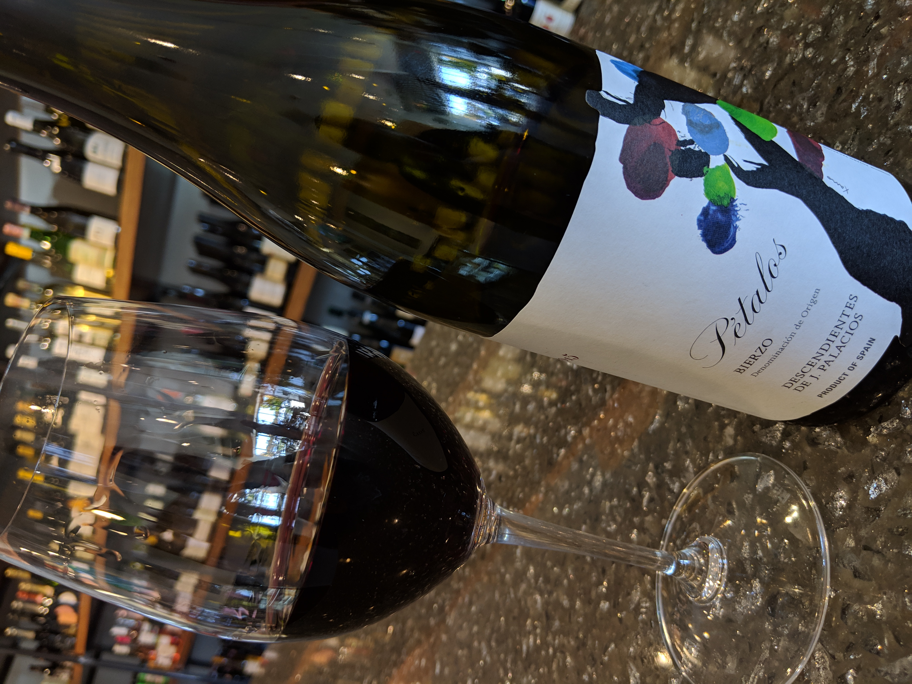

Mere's
A European Inspired Wine Boutique


Note: This article was first posted on November 14, 2018 here
Walking up to Mere’s I am immediately drawn to the cute patio area. Once inside I was enthralled with the wall lined with bottles upon bottles of wine. Along the other wall is a case of meats, a case of cheeses, and the register. Between the bottles and the cases of food are long community type tables. There are also additional smaller tables near the entrance, as well as on the patio. The staff was very friendly right away. We talked about different bottles we recognized on the wall and were fond of. We saw Gavi on the wall as well as Txakoli, Soave, and Gamay, all less common grape varieties we have come to love. The staff talked to us about some stand out Spanish wines they recently tasted while we contemplated what we wanted to have.

We eventually landed on a Spanish Bierzo by Petalos. It was funky with nice tannins and acidity. For food we got a the sandwich of the day, gruyere and sopressata on marble rye, as well as a small board with a goat cheese called Cannon Ball from Indiana. The board came with local honey, olives, crackers, bread, and figs. The cheese reminded us of the goat cheese we got while in France. The sandwich had a delicious citrusy tang to it from a special hot sauce Mere’s carries. The meat and cheese selection was of high quality and we felt satisfied and impressed with our selections.

While talking to Mere we learned the goal of the wine bar is to feel like a European Fromagerie. She wants to introduce the people of Charlotte to new wine and cheese that they haven’t had before. For this reason, only 1 glass of white and 1 glass of red are offered daily. The glasses of wine offered also change daily with prices ranging from $10-$15/glass. Customers are encouraged to try something new and check out the bottle selection. Bottles range from $15-$100+, so there is something for every price range and palate. In addition to wine, Mere’s offers beer by the bottle and can, as well as has a small assortment of gourmet grocery items. All of the food at Mere’s from the charcuterie boards to a single cheese can be taken to go either through a catering order or by ordering by the pound. We left with an amazing blue cheese to have later with the bottles we took home.
Location and hours:2400 Park Rd Suite H
Charlotte, NC
704-472-5513
Tues-Thurs: 10AM-8PM | Fri-Sat: 10AM-9PM | Sun-Mon: Closed
Weekly Tasting Time: Mere’s offers weekly wine tastings on Tuesdays, price is typically about $15
Pro Tip: Ask staff for help if you don’t know what you want. They are extremely knowledgeable about the selection and different taste preferences.
Need to Know: By the glass offerings are limited, so don’t come alone.
My Wine Selections: Bierzo by Petalos, Mt. Hermon Red Blend from Galilee, Louis De Grenelle Rose Corail (100% Cabernet Franc), Jean-Francois Merieau Le Bois Jacou Gamay